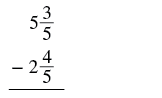
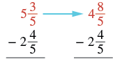
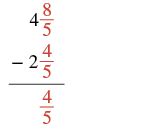
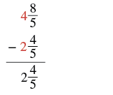

একই হরযুক্ত মিশ্র ভগ্নাংশের বিয়োগ
উৎস-অনুগত উপবিভাগ · m81290-fs-id1377484। সম্পূর্ণ বইয়ের অনুবাদ এখনও চলছে। গাণিতিক চিহ্ন, সংখ্যা ও মূল কাঠামো অক্ষুণ্ণ; প্রযোজ্য ক্ষেত্রে সূত্রের শব্দলেবেল বাংলায় অনূদিত। মূল ছবির ভিতরের ইংরেজি লেবেলের অর্থ বাংলা বিবরণে আছে। স্বাধীন শিক্ষক ও ভাষা-পর্যালোচনা বাকি। অন্য উপবিভাগের উৎস-লিঙ্কে ইন্টারনেট প্রয়োজন।
একই হরযুক্ত মিশ্র ভগ্নাংশের বিয়োগ
এবার মডেল ব্যবহার না করে মিশ্র ভগ্নাংশ বিয়োগ করব। তবে ধাপগুলি পড়ার সময় মনে মনে মডেলটি ভাবলে বুঝতে সুবিধা হতে পারে।
অনুশীলন · এই প্রশ্নের লিঙ্ক
বিয়োগফল নির্ণয় করো:
সমাধান
পাশাপাশি লেখা মিশ্র ভগ্নাংশের বিয়োগ। প্রথম সংখ্যার পূর্ণসংখ্যা অংশ 5 ও ভগ্নাংশ অংশের লব 3, হর 5। তা থেকে বিয়োগযোগ্য দ্বিতীয় সংখ্যার পূর্ণসংখ্যা অংশ 2 ও ভগ্নাংশ অংশের লব 4, হর 5। |
|
| সংখ্যা দুটিকে উপর-নীচে সাজিয়ে বিয়োগ লেখো। |  উপর-নীচে সাজানো বিয়োগ। উপরে মিশ্র ভগ্নাংশের পূর্ণসংখ্যা অংশ 5 এবং ভগ্নাংশ অংশের লব 3, হর 5। নীচে বিয়োগচিহ্নসহ মিশ্র ভগ্নাংশের পূর্ণসংখ্যা অংশ 2 এবং ভগ্নাংশ অংশের লব 4, হর 5; তার নীচে অনুভূমিক রেখা। |
| -এর মান -এর চেয়ে ছোটো। তাই 5 থেকে 1 নিয়ে এই ভগ্নাংশ অংশে যোগ করি—। পূর্ণসংখ্যা অংশ হয় 4, ভগ্নাংশ অংশ হয় 8/5; মোট মান বদলায় না। |  দুটি উপর-নীচে সাজানো বিয়োগ তিরচিহ্ন দিয়ে যুক্ত। প্রথমটির উপরের লাল মিশ্র ভগ্নাংশে পূর্ণসংখ্যা অংশ 5 এবং ভগ্নাংশ অংশের লব 3, হর 5। তাকে একই মানের 4 ও 8/5-এর যোগফলে পুনর্লিখন করা হয়েছে; এখানে অপ্রকৃত ভগ্নাংশের লব 8, হর 5। উভয় ক্ষেত্রেই নীচের বিয়োগযোগ্য মিশ্র ভগ্নাংশ অপরিবর্তিত: পূর্ণসংখ্যা অংশ 2 এবং ভগ্নাংশ অংশের লব 4, হর 5। |
| ভগ্নাংশ অংশগুলি বিয়োগ করো। |  4 ও 8/5-এর যোগফল থেকে 2 ও 4/5-এর যোগফল বিয়োগের মধ্যে শুধু ভগ্নাংশ অংশের ধাপ দেখানো। 8/5-এর লব 8, হর 5; 4/5-এর লব 4, হর 5। এই দুই ভগ্নাংশ লাল রঙে; রেখার নীচে তাদের বিয়োগফল 4/5 লাল রঙে লেখা। পূর্ণসংখ্যা অংশের বিয়োগ এখনও করা হয়নি, তাই 4/5 পুরো রাশির বিয়োগফল নয়। |
| পূর্ণসংখ্যা অংশগুলি বিয়োগ করো। ফলটি লঘিষ্ঠ আকারে আছে। |
 4 ও 8/5-এর যোগফল থেকে 2 ও 4/5-এর যোগফল বিয়োগের শেষ ধাপ। 8/5-এর লব 8, হর 5; 4/5-এর লব 4, হর 5। উপরের পূর্ণসংখ্যা অংশ 4 ও নীচের পূর্ণসংখ্যা অংশ 2 লাল রঙে। রেখার নীচে সম্পূর্ণ ফল মিশ্র ভগ্নাংশ: পূর্ণসংখ্যা অংশ 2 এবং ভগ্নাংশ অংশের লব 4, হর 5। ফলের পূর্ণসংখ্যা অংশ 2 লাল। |
প্রশ্নে মিশ্র ভগ্নাংশ দেওয়া হয়েছে, তাই উত্তরটিও মিশ্র ভগ্নাংশে রাখছি।
যোগের মতো, মিশ্র ভগ্নাংশগুলিকে আগে অপ্রকৃত ভগ্নাংশে রূপান্তর করেও বিয়োগ করা যায়। প্রশ্নে মিশ্র ভগ্নাংশ দেওয়া থাকলে উপযুক্ত ক্ষেত্রে উত্তরটিও লিখব মিশ্র ভগ্নাংশ হিসেবে। সম্পাদকীয় ব্যাখ্যা: ফল পূর্ণসংখ্যা বা চিহ্নসহ প্রকৃত ভগ্নাংশ হলে সেই আকারই রাখো; অপ্রয়োজনীয় শূন্য পূর্ণসংখ্যা অংশ যোগ করতে হবে না।
অনুশীলন · এই প্রশ্নের লিঙ্ক
অপ্রকৃত ভগ্নাংশে রূপান্তর করে বিয়োগফল নির্ণয় করো:
সমাধান
| অপ্রকৃত ভগ্নাংশে রূপান্তর করো। | |
| হর একই রেখে লবগুলি বিয়োগ করো। | |
| মিশ্র ভগ্নাংশে লেখো। |